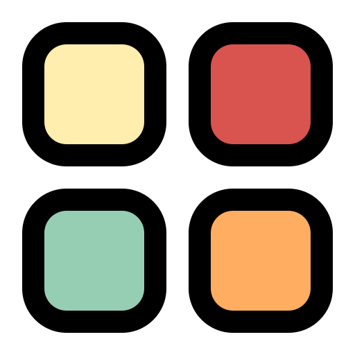

<mat-sidenav-container class="sidenav-container">
  <mat-sidenav #drawer class="sidenav" fixedInViewport
               [attr.role]="(isHandset$ | async) ? 'dialog' : 'navigation'"
               [mode]="(isHandset$ | async) ? 'over' : 'side'"
               [opened]="(isHandset$ | async) === false">
    
    <mat-divider></mat-divider>
    <mat-nav-list>
      <a mat-list-item routerLink="/admin/dashboard">
        Dashboard
      </a>
      <mat-toolbar>menu</mat-toolbar>
      <a mat-list-item routerLink="/admin/users">
        Users
      </a>
      <mat-divider></mat-divider>
      <a mat-list-item routerLink="/admin/blogs">
        Blog
      </a>
      <mat-divider></mat-divider>
      <a mat-list-item routerLink="/admin/category">
        Category
      </a>
    </mat-nav-list>
  </mat-sidenav>
  <mat-sidenav-content>
    <mat-toolbar class="toolbar-header">
      <button
        type="button"
        aria-label="Toggle sidenav"
        mat-icon-button
        (click)="drawer.toggle()">
        <mat-icon aria-label="Side nav toggle icon">menu</mat-icon>
      </button>
      <div class="container-fluid">
        <app-header></app-header>
      </div>
    </mat-toolbar>
    <!-- Add Content Here -->
    <router-outlet></router-outlet>
  </mat-sidenav-content>
</mat-sidenav-container>
